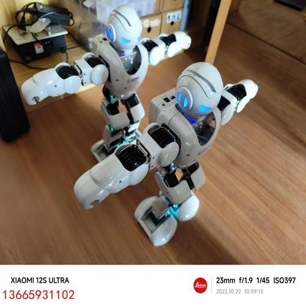

优必选 Alpha 1S

曾登上央视春晚舞台的桌面人形机器人，16 个伺服舵机实现类人动作，手机 App 拖拽即可编排动作与舞蹈，支持 3D 可视化编程，是消费级人形机器人的早期代表作。
客观评测
Alpha 1S 是优必选推出的桌面级人形机器人，全身约 16 个数字伺服舵机构成双臂、双腿与头部等自由度，可完成行走、舞蹈、俯卧撑等动作。控制系统通过蓝牙与手机 App 连接，提供动作拖拽编排与 3D 可视化编程功能；内置锂电池约 7.4V/2000mAh 量级，常规续航约一小时。整机高约 40cm、重约 1.7kg，是消费级人形机器人中较早实现规模化销售的产品之一。
主观点评
Alpha 1S 站在桌上跳一段舞，那种“小人儿活了”的观感很难被四轮小车替代。App 里拖几下就能编出新动作，上手门槛很低，孩子和大人都能玩进去。可惜它更像一台动作表演机：能编程的空间有限，想接入自己的算法基本没门，舵机磨损后维修也不便宜。作为客厅里的科技摆件和入门教具它合格，想搞研究则要另寻平台。
优点与不足
- 16 舵机人形结构，动作表演观赏性强
- App 拖拽编舞直观，无需代码即可创作动作
- 春晚效应带来高知名度，产品成熟度较好
- 开放性有限，深度编程与第三方扩展能力弱
- 舵机为易损件，长期高强度使用维护成本高
参数规格
| 自由度 | 16 个伺服舵机（双臂、双腿、头部等） |
|---|---|
| 舵机 | 数字伺服舵机，支持位置反馈 |
| 处理器 | 板载嵌入式主控（集成动作控制） |
| 传感器 | 舵机位置反馈、姿态传感（具体配置视批次） |
| 电池 | 约 7.4V 锂电池（约 2000mAh 量级） |
| 续航 | 约 60 分钟（常规动作） |
| 控制方式 | 手机 App（iOS/Android）蓝牙遥控、动作编排 |
| 编程 | 3D 可视化动作编辑、图形化编程 |
| 动作能力 | 舞蹈、俯卧撑、倒立、行走等预设与自编动作 |
| 身高 / 重量 | 约 40cm 高 / 约 1.7kg |
| 充电 | 专用充电器，约 1-2 小时充满 |
| 材质 | 工程塑料外壳 + 金属舵机结构 |